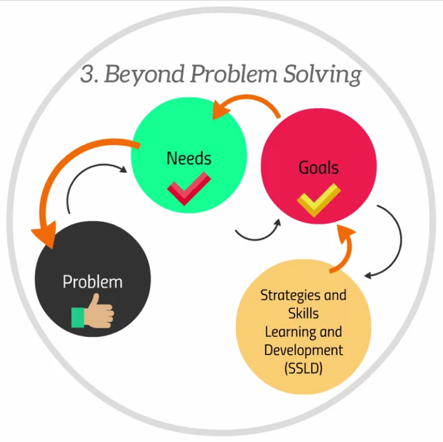

The Arts and Science of Relationships: Understanding Human Needs
Module 1: Relationship in Our Lives
Module 1.1: Why do people get involved in relationships
People get involved in relationships to address their needs.
Need: Required for life
- Physical/Biological: Oxygen, water, food, stimulation, activity, rest, physical safety.
- Psychological: Security, pleasure, comfort, identity, self-esteem, achievement.
- Social: Affiliation, intimacy, acceptance, community
Want: Preferences for life
- Ranges of representations of Needs

Figure 1: Comparison of Needs and Wants
Module 1.2: Intrinsic & Extrinsic Needs
There are 2 types of needs:
Intrinsic:
- Doing somethings for its own sake.
Extrinsic:
- Doing somethings to achieve something else.
- Personal
- Instrumental
Module 1.3: Relationships & Self
Relationships not only meet our needs, but also define who we are.
We become who we are as a result of the relationships we have.
Feedback from our relationships will impact who we are.
Module 1.4: Relationship & Wellness
Relationships not only meet our needs, but also define who we are.
We become who we are as a result of the relationships we have.
Feedback from our relationships will impact who we are.
SSLD: Strategies and Skills Learning and Development
Purpose: translate unmanageable problems into something managable (goals that can be
obtained).
Most of human problems in life are related to human needs that haven't been met.
Feedback from our relationships will impact who we are.
SSLD translates problems by
- assess the problem
- undertand needs
- set realistic goals
- develop stategies and skills to attain goals
- expanded range of options allows increased capacity to deal with problems in life, addressing needs, and solving problems

Figure 1: Comparison of Needs and Wants
Module 1.5: Introducing N3C
N: Needs
3C: Circumstances, Characteristics, Capacity
Module 1.6: Individualized N3C
Module 1.7 N3C: Circumstances
3 levels of Circumstances:
- Macro Level: global.
major global events, historic demography associated with one's generation. - Mezzo Level: regional/local.
sociocultral reality (social circle, reference groups, cultural values). - Micro Level: personal.
employment status, health condition, life stage, relationship status.
Module 1.8 N3C: Characteristics
3 types of characteristics:
- Physical: height, body type, ethinicity, gender
- Psychological personality, values, worldview, preferences, emotional and behavioural patterns
- Socialcultural: lifestyle, cultural practice, religious practice
Module 1.9 N3C: Capacity
3 levels of Circumstances:
- Physical: height, body type, ethinicity, gender
- Psychological personality, values, worldview, preferences, emotional and behavioural patterns
- Socialcultural: lifestyle, cultural practice, religious practice